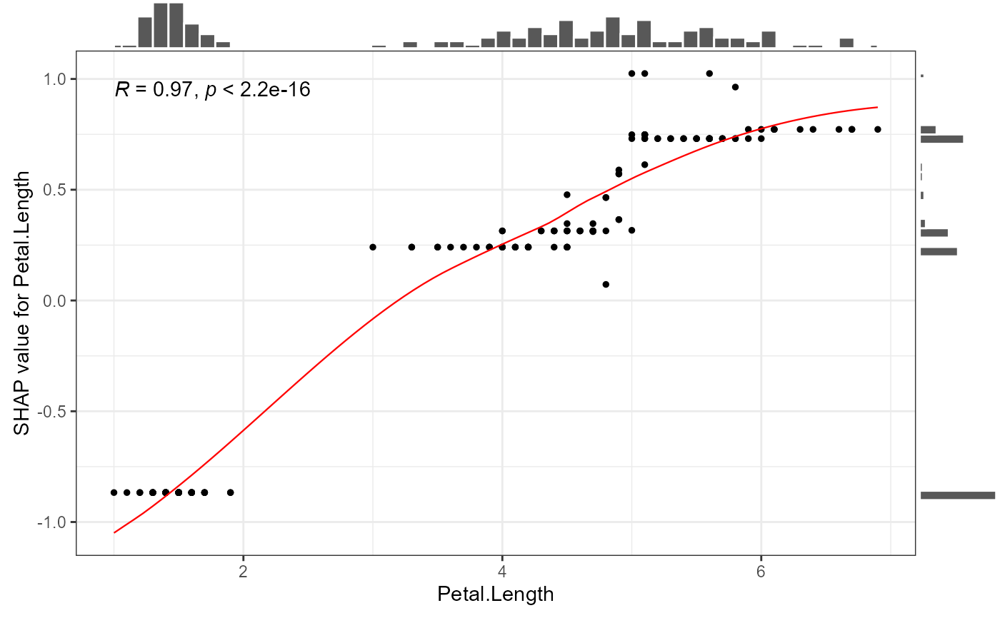
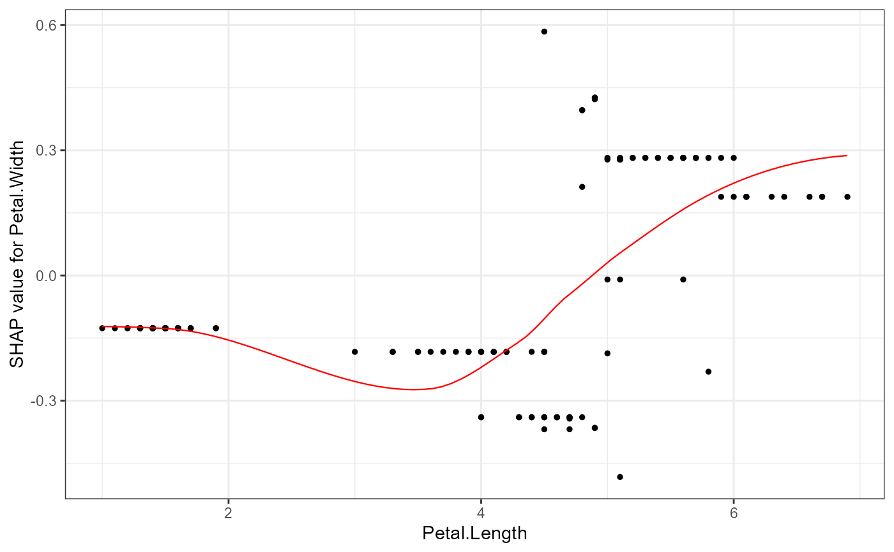
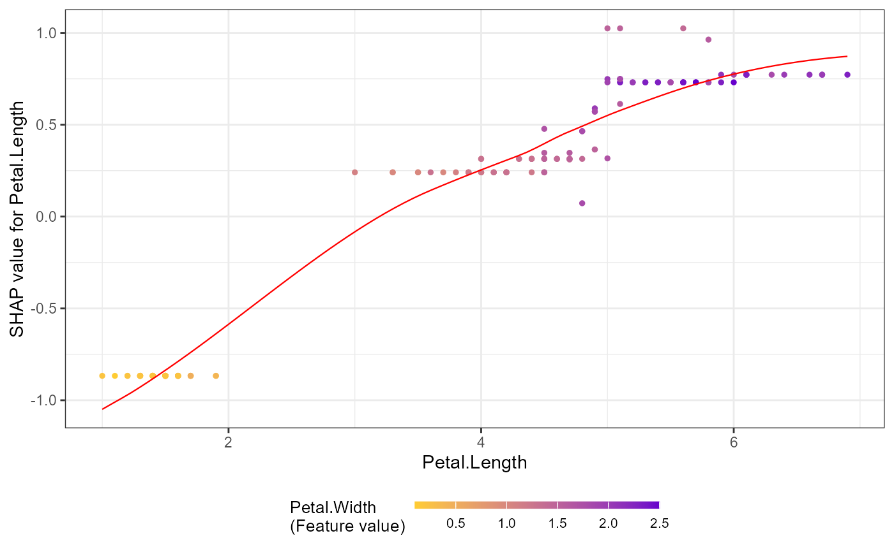
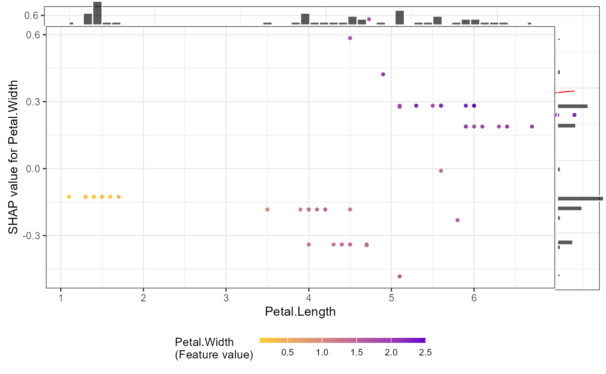

Creates scatter plots showing the relationship between feature values (x-axis) and SHAP values (y-axis). Can display:
Simple dependence: how feature values affect predictions
Colored by another feature: to explore interactions
Interaction effects: when
data_intis provided, shows pairwise SHAP interaction values
Usage
shap.plot.dependence(
data_long,
x,
y = NULL,
color_feature = NULL,
data_int = NULL,
dilute = FALSE,
smooth = TRUE,
size0 = NULL,
add_hist = FALSE,
add_stat_cor = FALSE,
alpha = NULL,
jitter_height = 0,
jitter_width = 0,
...
)Arguments
- data_long
the long format SHAP values from
shap.prep- x
which feature to show on x-axis, it will plot the feature value
- y
which shap values to show on y-axis, it will plot the SHAP value of that feature. y is default to x, if y is not provided, just plot the SHAP values of x on the y-axis
- color_feature
which feature value to use for coloring, color by the feature value. If "auto", will select the feature "c" minimizing the variance of the shap value given x and c, which can be viewed as a heuristic for the strongest interaction.
- data_int
the 3-dimention SHAP interaction values array. if
data_intis supplied, y-axis will plot the interaction values of y (vs. x).data_intis obtained from eitherpredict.xgb.Boosterorshap.prep.interaction- dilute
a number or logical, dafault to TRUE, will plot
nrow(data_long)/dilutedata. For example, if dilute = 5 will plot 20% of the data. As long as dilute != FALSE, will plot at most half the data- smooth
optional to add a loess smooth line, default to TRUE.
- size0
point size, default to 1 if nobs<1000, 0.4 if nobs>1000
- add_hist
whether to add histogram using
ggMarginal, default to TRUE. But notice the plot after adding histogram is aggExtraPlotobject instead ofggplot2so cannot addgeomto that anymore. Turn the histogram off if you wish to add moreggplot2geoms- add_stat_cor
add correlation and p-value from
ggpubr::stat_cor- alpha
point transparancy, default to 1 if nobs<1000 else 0.6
- jitter_height
amount of vertical jitter (see hight in
geom_jitter)- jitter_width
amount of horizontal jitter (see width in
geom_jitter). Use values close to 0, e.g. 0.02- ...
additional parameters passed to
geom_jitter
Examples
# Example: SHAP dependence plots
# 1. Simple dependence plot: SHAP values vs feature values
shap.plot.dependence(data_long = shap_long_iris, x="Petal.Length",
add_hist = TRUE, add_stat_cor = TRUE)
#> `geom_smooth()` using formula = 'y ~ x'
#> `geom_smooth()` using formula = 'y ~ x'

# 2. Show different SHAP values on y-axis
shap.plot.dependence(data_long = shap_long_iris, x="Petal.Length",
y = "Petal.Width")
#> `geom_smooth()` using formula = 'y ~ x'

# 3. Color by another feature's values
shap.plot.dependence(data_long = shap_long_iris, x="Petal.Length",
color_feature = "Petal.Width")
#> `geom_smooth()` using formula = 'y ~ x'

# 4. Customize x, y, and color features
shap.plot.dependence(data_long = shap_long_iris, x="Petal.Length",
y = "Petal.Width", color_feature = "Petal.Width")
#> `geom_smooth()` using formula = 'y ~ x'
# 5. Additional options: histogram, smooth line, data dilution
shap.plot.dependence(data_long = shap_long_iris, x="Petal.Length",
y = "Petal.Width", color_feature = "Petal.Width",
add_hist = TRUE, smooth = FALSE, dilute = 3)

# Create multiple plots at once
plot_list <- lapply(names(iris)[2:3], shap.plot.dependence, data_long = shap_long_iris)
# SHAP interaction effect plot
# First, prepare the model and interaction data
X_iris = as.matrix(iris[,1:4])
y_iris = as.numeric(iris[[5]]) - 1
dtrain = xgboost::xgb.DMatrix(data = X_iris, label = y_iris)
params = list(learning_rate = 1, min_split_loss = 0, reg_lambda = 0,
objective = 'reg:squarederror', nthread = 1)
mod1 = xgboost::xgb.train(params = params, data = dtrain,
nrounds = 1, verbose = 0)
# Get interaction SHAP values (two methods):
data_int <- shap.prep.interaction(xgb_model = mod1, X_train = X_iris)
# Or directly:
shap_int <- predict(mod1, X_iris, predinteraction = TRUE)
# Plot interaction effects (y-axis shows interaction values)
shap.plot.dependence(data_long = shap_long_iris,
data_int = shap_int_iris,
x="Petal.Length",
y = "Petal.Width",
color_feature = "Petal.Width")
#> `geom_smooth()` using formula = 'y ~ x'